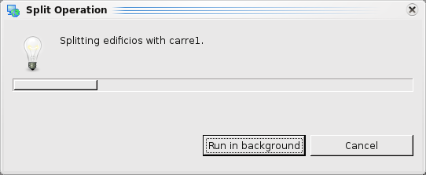

Split Operation¶
Split a polygon layer using a LineString layer
The Split Operation takes the features from the split layer (source) and uses the LineString features from the using layer to split them.
The result of the Split Operation could be stored on a new layer, on an existent layer or on the previously used source layer.
Sample Usage¶
On this example we are going to do an split operation with the polygon layer edificios.shp and the lineString layer carre1.shp.

Figure 1. Before operation.
- Go to the Spatial Operations View, and select Split from the Operations list .
- The Split Operation‘s specific input options will show up.
Now is time to indicate the operation’s inputs, as shown in Figure 2:
Select the Source From the Split layer drop down, select the Layer containing the Features to Split, this one will be our source layer.
- Select the Using
From the Using Layer drop down, select the layer to use as splitting mask.
Select the Result At the Result Layer drop down, a tentative Layer name will be proposed for the layer the operation will create. You can change the name or select an existing Layer where to store the results. Also, you can select the used source layer.

- Figure 2. Define input and target layers.
- Perform the operation Once the input and target layers are defined, press the Perform button at the Spatial Operations View tool bar. The operation will begin processing and its progress will be shown up on a progress dialog, as shown in Figure 3. The operation may take a while to complete, depending on the amount and complexity of the input geometries.
- 
- Figure 3. Progress dialog.
Shows the newly created Layer (Split-1) added to the map, with the Features resulting of applying the split operation between the Split and Using Layers.

- Figure 4. Result Layer.